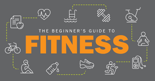

Beginner's Guide to Fitness
By Kavya, August 17, 2024
Starting a fitness journey can be daunting, but with the right mindset and approach, you can set yourself up for success. Whether you want to lose weight, build muscle, or improve your overall health, this guide will help you navigate the basics of fitness.
Setting Realistic Goals
The first step is to set achievable and realistic goals. Consider what you want to accomplish and create a plan that aligns with your lifestyle and fitness level. Start with small, manageable goals, and gradually increase the intensity and duration of your workouts.
Understanding the Basics
Before diving into any fitness routine, it's essential to understand the basic components of fitness: cardiovascular exercise, strength training, flexibility, and balance. A well-rounded fitness program includes all these elements to ensure overall health and wellness.
Finding the Right Workout
There are countless workout options available, from running and cycling to yoga and weightlifting. Choose activities that you enjoy and that fit your goals. Consistency is key, so finding something you like will help you stick with your routine.
Staying Motivated
Motivation can be a challenge, especially in the beginning. Track your progress, celebrate small victories, and remind yourself of why you started. Joining a fitness community or working out with a friend can also keep you accountable and motivated.
Listening to Your Body
It's important to listen to your body and avoid pushing yourself too hard, especially when you're just starting. Pay attention to how you feel during and after workouts, and give yourself time to recover. Remember, fitness is a journey, not a sprint.
With dedication and patience, you can build a fitness routine that works for you. Remember, the most important thing is to stay consistent and enjoy the process.